Grammar · A1 to C2 · 19 topics
English grammar, by topic
Every grammar lesson on the site, shelved by the point it teaches. Each topic page explains the rule in plain sentences, then lists the lessons that drill it, by level, free ones first.
- 281lessons
- 19topics
- 63free — no sign-in
The tense code
Twelve tenses, one colour each
A tense is a time and a shape: three times across, four shapes down, and one square more for going to, which is not a tense but is taught as one. Each wears the colour it has on the Sherpa Tensing route map, so once you know the code a lesson’s colour tells you its tense before you read its title.
A square opens the topic page for its tense — the rule in plain sentences, then every lesson on it by level — or, where one lesson stands alone, that lesson. The same colours mark the camps on the Sherpa Tensing route map and the units in Block Camp.
All of them at once Tense review and scored grammar tests — every tense side by side, the time signals that choose between them, and tests that name the lesson to go back to. 26 lessons, 11 free. Open →Every topic
Shelved by the point it teaches
The tenses first, in the order a learner meets them; then the passive, the modals, prepositions, conditionals and the rest, which sit alongside; then the skills built on all of it. Every lesson is a 16:9 deck that opens in the browser — the rule on the slide, then practice, then a speaking task, with a language switcher for the explanations.
Tenses
77 lessons · in teaching order · the colour is the tense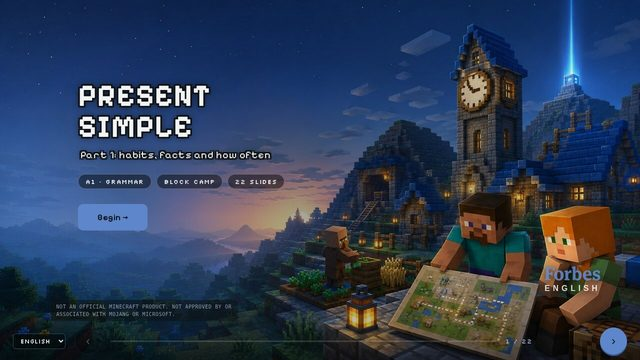
Present Simple
habits, facts, timetables and states, with the third-person -s, questions with do/does, and time signals like always, usually and never.
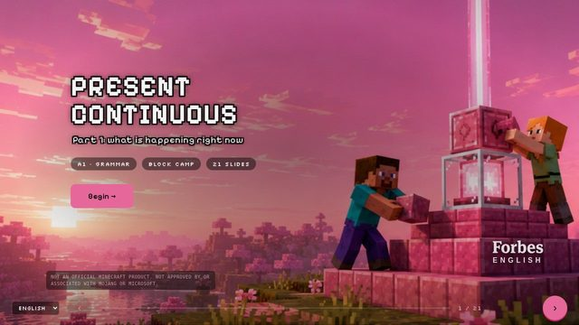
Present Continuous
what is happening now, temporary situations, plans that are already arranged, and the difference from the Present Simple.
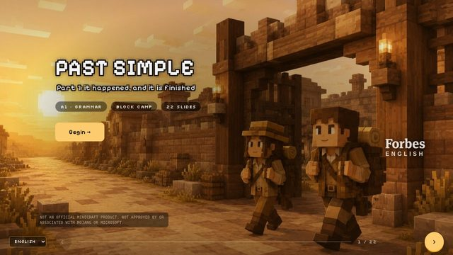
Past Simple
finished actions at a finished time, regular -ed and the irregular verbs, questions and negatives with did, and how it differs from the Present…
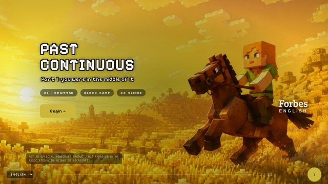
Past Continuous
an action in progress in the past, interrupted by a Past Simple event, with while, when and as.
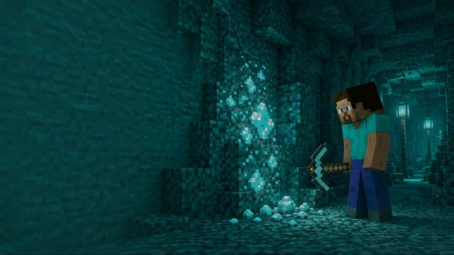
Present Perfect
past actions with a present result, life experience with ever and never, unfinished time with since and for, and the difference from the Past Simple.
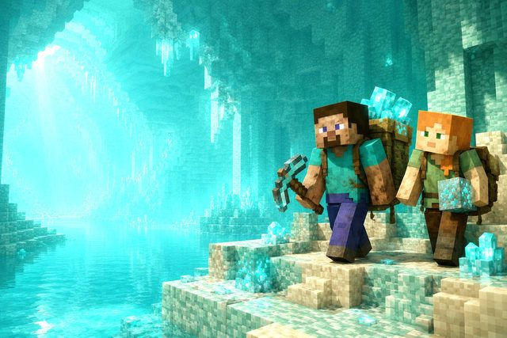
Present Perfect Continuous
have been doing, for how long, and activities whose effects you can still see, against the Present Perfect Simple.
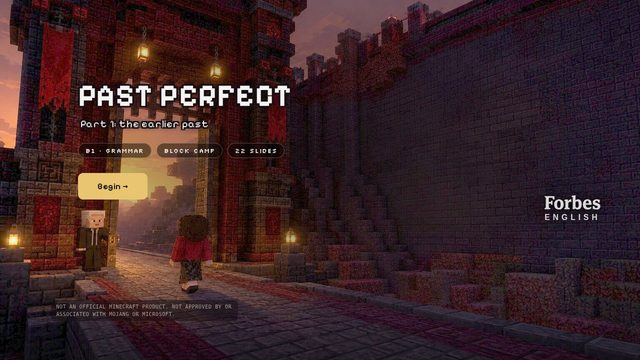
Past Perfect
had done for the earlier of two past events, with by the time, before, after and already, plus the Past Perfect Continuous.
Future Tenses
will for decisions and predictions, going to for plans and evidence, the Present Continuous for arrangements, and the Future Continuous and Future…

Tense Review and Grammar Tests
every tense side by side, the time signals that choose between them, and scored tests that show which lesson to go back to.
Grammar
59 lessons · the points that sit alongside the tensesPassive Voice
be + past participle in every tense, when to leave out the agent, by-phrases, and the causative have something done.
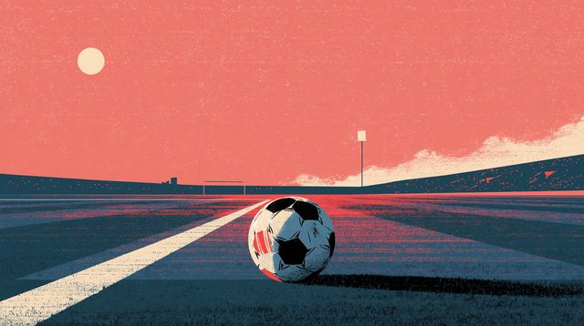
Modal Verbs
must, have to, should, can, could, might and may for obligation, advice, ability and possibility, and the past modals should have and must have.
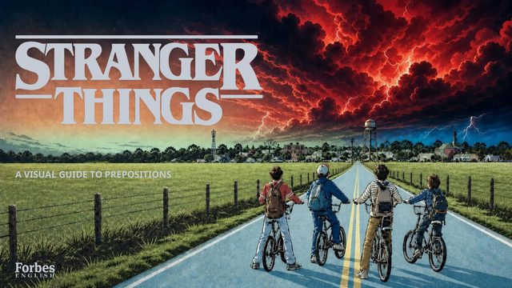
Prepositions
in, on and at for time and place, dependent prepositions after verbs and adjectives, and the advanced pairs that separate B2 from C1.
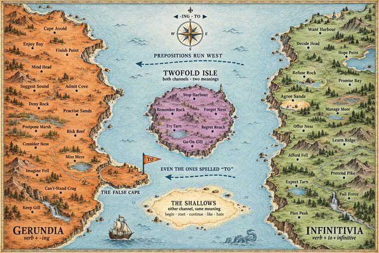
Gerunds and Infinitives
verbs followed by -ing, verbs followed by to, the ones that take both with a change of meaning, and gerunds as subjects and after prepositions.

Conditionals
zero, first, second and third conditionals, mixed conditionals, and if-clauses in business and argument.
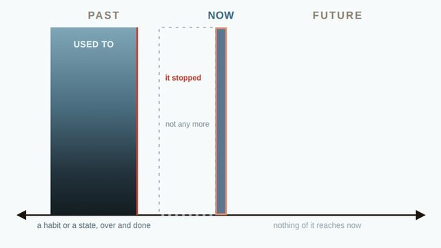
Used To and Be Used To
used to + verb for past habits that have stopped, be used to + -ing for what is familiar, and get used to for what is becoming familiar.
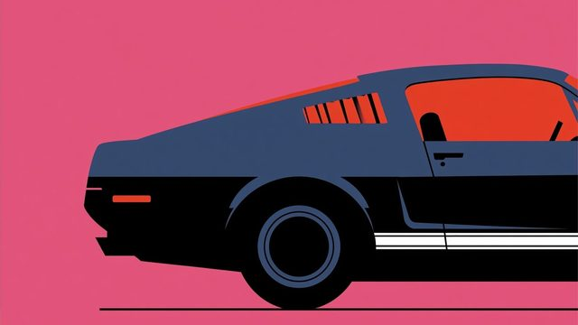
Phrasal Verbs and Collocations
take, put, make and do, separable and inseparable verbs, and the collocations native speakers reach for.
Skills
153 lessons · built on all of itBusiness English
meetings, negotiation, presentations, emails, feedback, client conversations and the vocabulary of construction, energy, architecture and design.
IELTS Academic
Writing, Speaking, Listening, Reading and the vocabulary that feeds them.
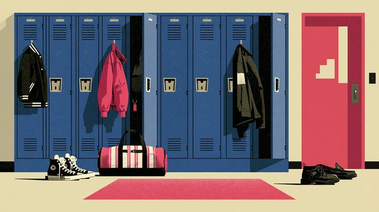
Vocabulary and Topic Lessons
English vocabulary lessons from A1 to C2 built around a subject — football, skiing, hiking, Minecraft, Lego, film, nature, food, architecture — with…
Two routes through the tenses
Or climb them in order
Two courses take the tenses one at a time, in teaching order, with a map that shows where you are. Both wear the colour code above.
-

Sherpa Tensing · A2–C1
Thirteen camps up, nine back down
Every tense as a camp on the way up the mountain, in the active voice, then the same camps in the passive on the way down. 26 lessons, 5 free.
Open the route map → -
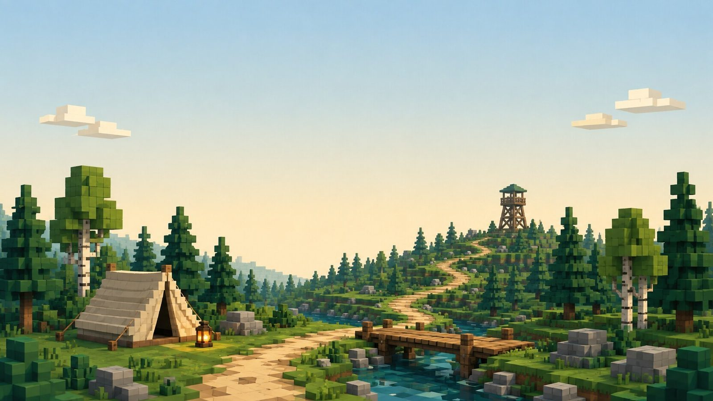
Block Camp · A1–B2
The same trail, block by block
A voxel-built world: the tenses two parts each, the passive on the far side of the watchtower, and branching adventures with a grammar point built into the plot. 40 lessons, 10 free.
Walk into camp →
Teaching this?
Every deck is built to be presented from: big type, one idea a slide, the rule stated before it is practised, and a speaking task at the end. Open a free one on the projector and see whether it suits your room before you pay for anything.
Looking for one lesson in particular?
The library lists every lesson on the site, filterable by level, topic and whether it is free, with a picture for each so a class can pick by eye. Exam English has its own landing page: IELTS Academic, five routes in teaching order.
Not sure of your level?
Six questions a level, then a lesson
The Level Checker is free and adaptive: it tests the tenses from A1 up, stops when it knows, and names the lesson to open first.